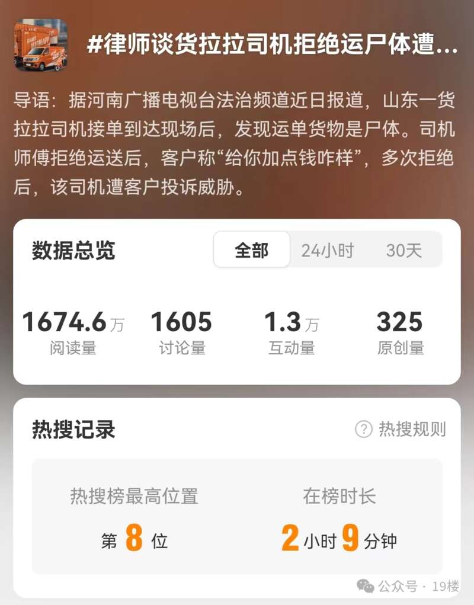
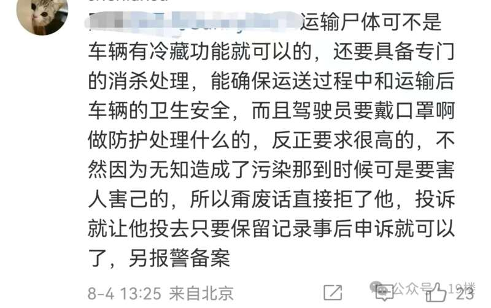
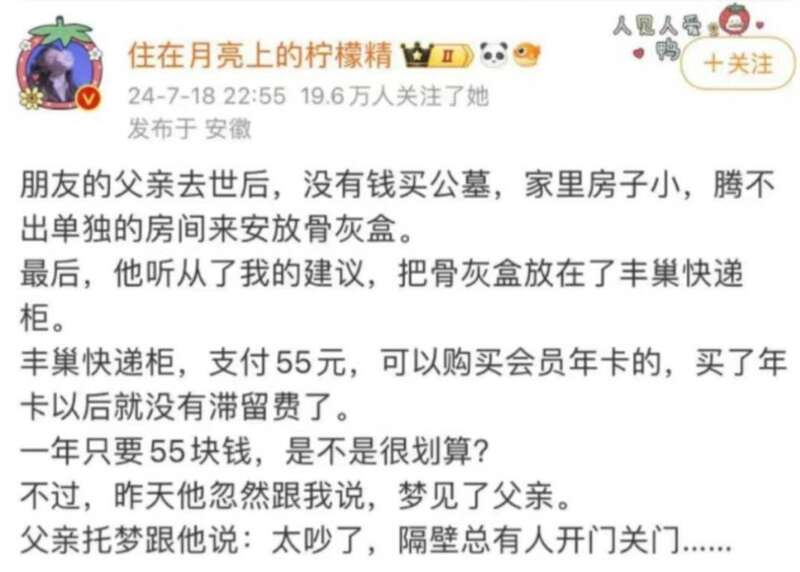
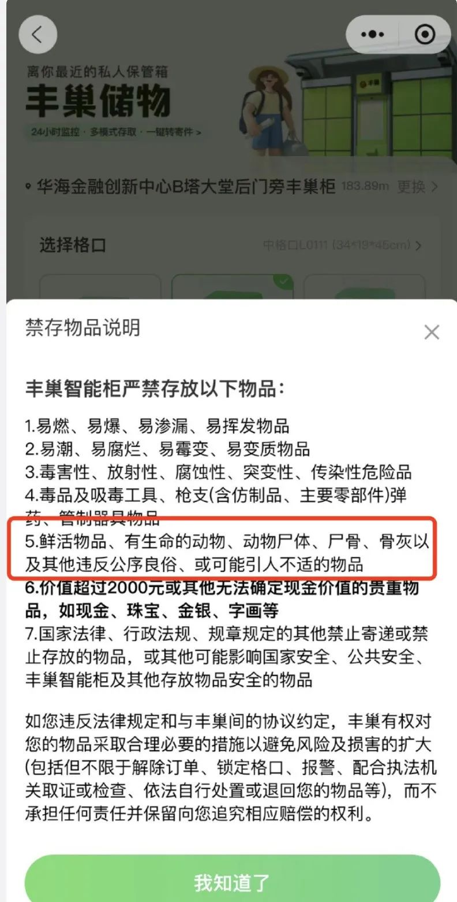
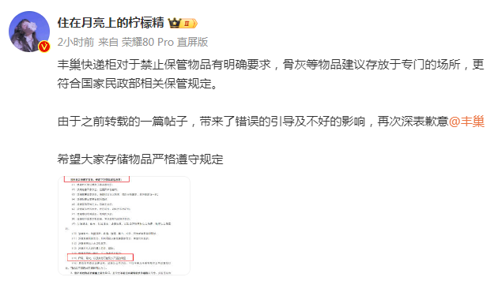
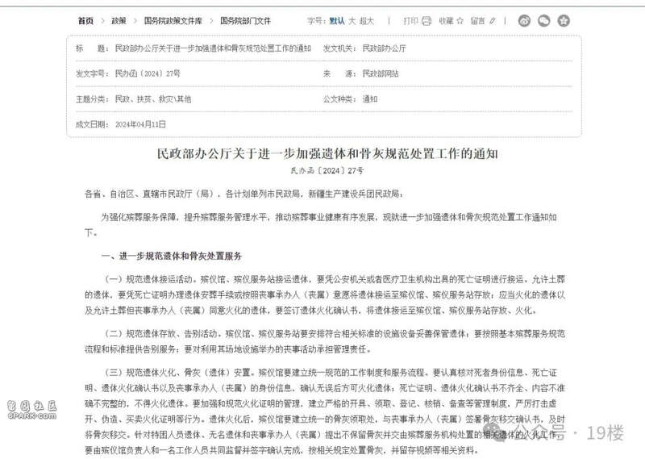

今天热搜上的一个话题
吸引了大批网友的注意
“货拉拉司机拒绝运尸体遭投诉”
诸多关键词让人目瞪口呆

据报道，近日，山东一货拉拉司机接单到达现场后，发现运单货物是遗体。司机师傅拒绝运送后，客户称“给你加点钱咋样”，多次拒绝后，该司机遭客户投诉威胁。
各方回应
8月3日，货拉拉平台的工作人员表示，货拉拉的车辆无法满足运送遗体的条件，建议客户选择合适的平台进行运输。司机师傅应与客户进行协商，正常取消订单后没有其他责任。若是客户坚持投诉，系统进行检测后会给司机师傅判责的提醒，司机师傅可以申诉，申诉后会交由工作人员进一步审核，“审核结束后若能确定不是司机师傅的原因，便能把该判责撤销，不会对司机师傅产生影响。”
广东法制盛邦律师事务所律师邓刚告诉媒体，根据殡葬管理相关规定，经营性的遗体运输车辆等殡葬设备，必须符合国家规定的技术标准。任何单位和个人未经批准，不得擅自提供遗体运输服务。一些地方法规还规定，火葬地区内，死亡人员的遗体由当地殡葬服务单位负责收运，其他单位和个人不得收运。运送遗体须用殡葬专用车辆。因此，运送尸体的车辆和机构应当符合法律法规规定的条件与要求。
他还称，承运人司机与托运人客户之间属于运输合同关系，双方应当就权利义务协商一致，如果相关事项不符合相关法律规定，或者承运人事先没有被告知承运的具体事项，且承运人不具备运输资质和条件的，平台不应追究承运人的责任。如果承运人违反规定承运遗体，导致妨害公共秩序、危害公共安全、侵害他人合法权益的，由主管部门予以制止，产生其他后果的，按照其行为及后果承担责任。
网友热议
如此离谱事件，让不少网友义愤填膺。
评论区支持司机的呼声很高。有人强烈要求专车专用，建议司机报警维权，还有人依旧震惊于事件本身。
也有网友提出，顾客提出这样的要求的确不对，但专用车辆的费用高也是确实存在的问题。
但由网友表示，专用车辆建设维护成本本身就高，车辆使用价格很难降低。
有网友对此做了更全面的科普。他表示，专用车辆除了需要有冷藏功能，还需具备消杀、防护等设备及功能，以防造成污染。并建议司机报警备案。

新闻多看点
7月，一名叫“住在月亮上的柠檬精”的网友发文称，“把骨灰盒放在丰巢快递柜，一年只要55元”，就引发过热议。

尽管丰巢客服表示，每个星期都会有快递员去清理快递柜里的滞留件，以避免这样的事情发生，且该网友随后发文道歉，但网友的讨论一时并未停止。


志玲查询发现，今年4月，民政部办公厅发布了《关于进一步加强遗体和骨灰规范处置工作的通知》。通知中提到，为进一步规范遗体和骨灰处置服务，提出以下几点要求。
（一）规范遗体接运活动。
殡仪馆、殡仪服务站接运遗体，要凭公安机关或者医疗卫生机构出具的死亡证明进行接运。允许土葬的遗体，要凭死亡证明办理遗体安葬手续或按照丧事承办人（丧属）意愿将遗体接运至殡仪馆、殡仪服务站存放；应当火化的遗体以及允许土葬但丧事承办人（丧属）同意火化的遗体，要签订遗体火化确认书，将遗体接运至殡仪馆、殡仪服务站存放、火化。
（二）规范遗体存放、告别活动。
殡仪馆、殡仪服务站要安排符合相关标准的设施设备妥善保管遗体；要按照基本殡葬服务规范流程和标准提供告别服务；要对利用其场地设施举办的丧事活动承担管理责任。
（三）规范遗体火化、骨灰（遗体）安置。
殡仪馆要建立统一规范的工作制度和服务流程。要认真核对死者身份信息、死亡证明、遗体火化确认书以及丧事承办人（丧属）的身份信息，确认无误后方可火化遗体；死亡证明、遗体火化确认书不齐全、内容不准确不完整的，不得火化遗体。要加强和规范火化证明的管理，建立严格的开具、领取、登记、核销、备查等管理制度，严厉打击虚开、伪造、买卖火化证明等行为。遗体火化后，殡仪馆要建立统一的骨灰领取处，与丧事承办人（丧属）签署骨灰移交确认书，及时将骨灰移交。针对特困人员遗体、无名遗体和丧事承办人（丧属）提出不保留骨灰并交由殡葬服务机构处置的相关遗体的火化工作，要由殡仪馆负责人和一名工作人员共同监督并签字确认完成，按相关规定处置骨灰，并留存视频等相关资料。

对此，你怎么看？
欢迎到评论区分享！